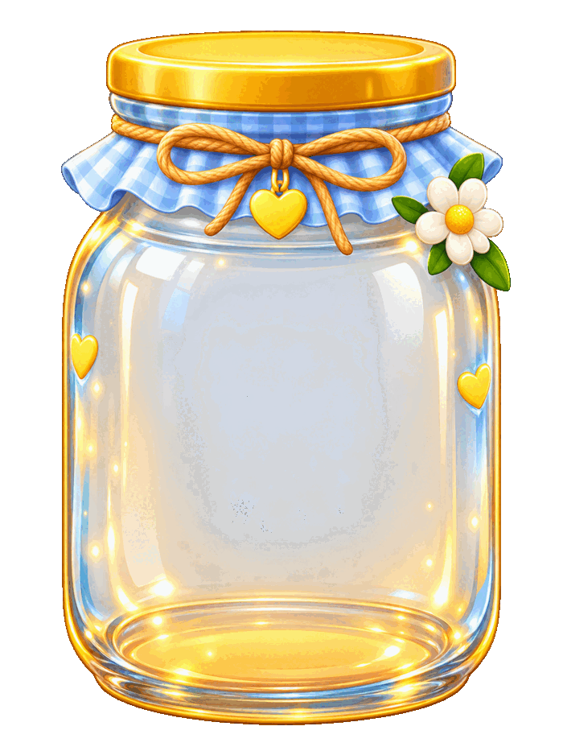

Tap something you're thankful for!
0 / 8
About Thankful Jar
Thankful Jar is a simple, picture-only way for young children to practice gratitude. Tap any picture of something you love, family, sunshine, a pet, and watch it drop into the jar. There is nothing to read and nothing to get wrong, just a warm, easy way to notice the good things in life.
How to Play
- Look at the pictures below the jar.
- Tap something you are thankful for.
- Watch it pop into the jar.
- Keep tapping until the jar is full, then celebrate!
Why Practicing Gratitude Helps
Even very young children can start building a grateful heart. Turning gratitude into a simple, playful, picture-based activity, with no reading required, helps children as young as two join in and start noticing the good things around them.
Frequently Asked Questions
How do you play Thankful Jar?
Tap any picture of something you are thankful for. It drops into the jar. Keep tapping until the jar is full of all eight things.
What does Thankful Jar teach?
It gives children an easy, picture-only way to practice noticing and naming the good things in their life, no reading required.
Is Thankful Jar free to play?
Yes. It plays free in any web browser with nothing to download or install.